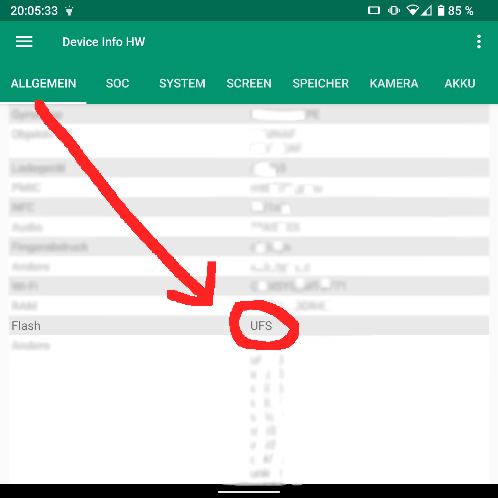

Unihertz Titan, GSI, Android 13 and UFS
First of all; What is UFS and what does it mean for me. The first Titans have EMMC-Memory (The phone storage). UFS is a faster type of memory and in pretty much every model after the first year of production as far as the community is concernt. UFS is faster and generally better BUT the way how it interacts with Modding stuff and the firmware is drastic... . That's why you need to be very careful and do a lot of research before you try anything or you will end up with a seemingly HardBricked phone. At the moment the TWRP ONLY really works on EMMC and the start of unlocking and Modding is different. GSIs, after everything is prepared and installed, are used and flashed the same way. But the SP-Flash-Tool needs different files for different types of memory and most importantly, you cannot install any ZIPs with UFS Titans at the moment. This can, but most likely will not, change in the future. You will probably will lose your warranty.
I did a ton of research to install a custom GSI on my Unihertz Titan. As you might expect for such a small production / slowly selling phone, the support and amount of users are relatively small. One other thing is that Unihertz dose; They don't release their Kernel Code, which they're obligated to do when they release a custom Version of android (Every Phone every has a modified version of stock android on it.). This documentation expects from you that you know at least the basics regarding Android Modding and the Linux Terminal / Windows CMD! Do your research! This documentation uses the Unihertz Titan Stock UFS Android 10 as Base and with the last Update at that point (07.08.2022 - Android 10.0). In this documentation I install a vanilla gsi (clean from anything, that means fully FOSS and AOSP). There are only links to the Posts (It's important that you read what the files do / are needed for). We will use AOSP 12.1 v414 by phhusson (system-squeak-arm64-ab-vanilla.img) in this documentation. The firmware files are ONLY for the EEA-UFS-Titans! Some people on the discord say it also can be flashed on the TEE-UFS-Titans but I can not confirm that. The same for the patched Boot.img's. I only have an EEA-UFS-Titan. If you have a TEE, proceed with caution! This is only testet on EEA-Titans until now!
Anyway. I hope you find this documentation of my time intensive research useful! As always: IF YOU TRY ANYTHING WRITTEN ON THIS BLOG YOU ARE DOING IT AT YOUR OWN RISK! IT SHOULD BE OBVIOUS! DON'T COME TO ME CRYING IF SOMETHING WENT WRONG. THAT'S YOUR PROBLEM AND ONLY YOURS!
First check what type of flash you have. As the title of this entry says this is only for UFS-Flash Titans. If you have an EMMC Titan then you need to look how to do it for yourself!!! Lets Check:

When you are VERY VERY VERY VERY sure that your Titan is UFS then continue. WARNING: YOU WILL LOSE ALL DATA ON THE PHONE! DO A BACKUP UP!
Preparation and what to do in the worst case: Make ABSOLUTLY sure you have a working Sp-Flash-Tool v5.2152 !BEFORE! something goes wrong. If you get a bootloop you can use it to get it back to boot. Just flash what you messed up. Download Agent: /DA_PL.bin. Add the Scatter-loading File. Download Only. Now mark your broken partitions. In most cases System.img or/and Boot.Img. Now press Download! Lets hope you will never need this. But sadly on the Titan there is nearly no way to get into the fastboot mode without a working rom. As soon as you get a bootloop you need a way to reflash the stock system.img to get it un-SoftBricked. How stupid!
FlashTool:
https://spflashtools.com/linux/sp-flash-tool-v5-2152-for-linux
Firmware SPECIFIC and ONLY for the Unihert Titan [UFS] (!!!EEA!!! ???TEE???)
https://discord.com/channels/722458117266210887/722494185776611399/890735928853819422
https://discord.com/channels/722458117266210887/722618142039343114/991570073045180486
https://discord.com/channels/722458117266210887/722494185776611399/884722461340479509
https://unihertz-titan.neocities.org/
Now to the imporant part. What you need to know, to have and to do:
First, why are there different ways to do an unlock and gsi-flash between EMMC and UFS?:
https://github.com/phhusson/unihertz_titan/issue/5
The GSI (In my case the AOSP 12.1 v414) [system-squeak-arm64-ab-vanilla/FLOSS/GAPPS/GOGAPPS.img]:
https://github.com/phhusson/treble_experimentations/releases/
A modified boot image (A modified boot.img with the vbmeta patched. It checks if your System was modified before booting). The easiest way to make one is to get the boot.img for your Titan (From your Firmware Archive for the SPFlashTool) and patch it with Magisk. It has an option to patch vbmeta in the boot.img. When it is patched you can boot what you want, similar to a PC:
https://github.com/topjohnwu/Magisk
If you really REALLY don't want to do this yourself, you could use this boot.img from the Titan Discord. I highly HIGHLY recommend you do it yourself for security reasons! If you still choice to go this route, here is a link to it:
https://discord.com/channels/722458117266210887/722618142039343114/936872357878988831
Enable the Developer-Options and then enable USB-Debugging in the Developer settings, connect your computer and then do the following in the terminal:
adb reboot fastboot
fastboot flash unlock
fastboot reboot
-Enable the Developer-Options and then enable USB-Debugging again.
adb reboot fastboot
fastboot -w
fastboot erase system
fastboot flash boot YOUR_PATCHED_BOOT.img
fastboot flash system system-squeak-arm64-ab-vanilla.img
fastboot reboot
After some time (Without a second reboot) the Unihertz logo should disappear and most likely you get a black screen. THAT'S GOOD! That means that the GSI is booting!!! Most boot logos don't work on the 1:1 screen of the Titan I discovered.
After some time you sould be in Android 12! NICE!
Now it is time to get the keyboard as much working as it is possible at the point of writing.
Install BB-Keyboard on the phone. You could find an already modded APK on the internet (unsafe) or just get the original APK, remove the "Only, BB" dependency yourself, sign and encrypt it again. (Recommended but complicated, probably easier to ask the people on the discord for there source.): https://catwithcode.github.io/Blog/2022.05.08_Unpack_Repack_Resign_APK/Unpack_Repack_Resign_APK.html
Change the Android Keyboard to BB-keyboard and then configure it like you need it. (Could theoretically work with other keyboard apps, but I have not tested it).
Now get the following repo and extract it and the open a terminal in the main directory.
https://github.com/SolidHal/Unihertz-Titan-lineageos-microg/
Now execute all the following things:
adb root
adb remount
adb shell mount -o remount,rw /
adb push resources/keyboard/Android10/system_usr_idc/* /system/usr/idc/
adb push resources/keyboard/Android10/system_usr_keychars/* /system/usr/keychars/
adb push resources/keyboard/Android10/system_usr_keylayout/* /system/usr/keylayout/
adb shell settings put secure show_ime_with_hard_keyboard 1
adb push resources/keyboard/Android10_function/system_usr_idc/* /system/usr/idc/
adb push resources/keyboard/Android10_function/system_usr_keychars/* /system/usr/keychars/
adb push resources/keyboard/Android10_function/system_usr_keylayout/* /system/usr/keylayout/
adb push resources/uinput-titan/uinput-titan /system/bin/uinput-titan
adb push resources/uinput-titan/titan.rc /system/etc/init/
adb push resources/uinput-titan/titan-uinput.idc /system/usr/idc/
adb reboot
adb root
adb remount
adb shell mount -o remount,rw /
adb shell rm /system/bin/uinput-titan
adb shell rm /system/etc/init/titan.rc
adb shell rm /system/usr/idc/titan-uinput.idc
adb push resources/keyboard/Android10/system_usr_idc/* /system/usr/idc/
adb push resources/keyboard/Android10/system_usr_keychars/* /system/usr/keychars/
adb push resources/keyboard/Android10/system_usr_keylayout/* /system/usr/keylayout/
adb reboot
After all of this the Keyboard works perfectly! Only the backlight and the Touch scroll will not work. The Backlight is still an issue with the driver. Touch scroll is possible, but very buggy (that's why you install all the stuff and then remove some of it to get everything working as well as possible. This can change in the future but at this point it is more broken than working). The linked guide also mentions it that it is really buggy.
https://github.com/SolidHal/Unihertz-Titan-lineageos-microg
That's pretty much it. Now you have a fully modded and mostly working Titan with unlocked bootloader for GSI's and all the recovery tools you could ever need.
If you are wondering how well everything works, here is a short list of my experience (And before someone asks; The cameras are as bad as before and the fingerprint reader as unreliable as before, so no changes there.).:
Here is a List of ROM's I tested (With small Comments (Links to them in the Sources Section)):
From my Testing only GSIs with the following properties do boot on the Unihertz Titan: [ARM64 - Binder | a/b] (GSIs with only ARM64 (without Binder) for example or vndklite-GSI'S or A-Only (and so on...) will not boot!
- AOSP 12.1 v414 - Android 12 - (phh (phhusson)) - Works, except for the Keyboard-Backlight.
- Lineage-19.1-20221011-UNOFFICIAL-arm64_bvS - Android 12 - (AndyYan) - The best so far. Really fast and stable.
- /e/OS 1.4 20220924220853 - Android 10 - (E Foundation) - Works great! Fast! Android 10... :S.
- LineageOS 20 "Light" - 20221109 - Android 13 - (AndyYan) - DOSE !NOT! BOOT! Unknown why. It tries to boot and after 2 tries shows a screen where it wants to format the DATA-Partition which does not work.
- Android 13.0.0_r14 ci-20221110 - Android 13 - (TrebleDroid™ Builders) - Works as good as any other phh (phhusson) GSI, because they are the successor of them. Keyboard-Backlight still dose not work. Many AOSP-Stock-System-App's are so outdated that they don't work all that well today (Contacts, Gallery, ...). You can replace them with alternatives (App's from SimpleMobileTools for exapmle).
Broken:
- No Keyboard scrolling for now
- Scrcpy (USB-Android-ADB Screen-Mirroring) is broken for now. But 99.9% of people don't need this.
GSI Specific things:
- [ONLY ON PHH-AOSP-GSIs] - Boot animation doesn't work, but who cares... .
- [ONLY ON PHH-AOSP-GSIs] - No Keyboard backlight for now.
- [ONLY ON PHH-AOSP-GSIs] - The Android 12 "Pick up to Turn on" function (which is kinda nice) is buggy (Power button don't really wants to turn on the screen sometimes). Just turn it off in the Display-Settings AND REBOOT. If it still gets/got bugged, just hold the power button a little longer, then it turns on (half as long as you would for the power options).
- Magisk dose work on all GSIs except for PHH-AOSP-GSIs (ONLY the preinstalled PHH-SuperUser works there).
- The best performance so far has the AndyYan's Lineages GSI! The eOS GSI is also is really, really fast! PHH-AOSP-GSIs are a little slow and laggy for some reason. STILL LOVE THEM THOUGH!
- [EXCEPT FOR THE AndyYan LineageOS GSI PORT AND THE e OS GSI!!! THEY HAVE A VERY GOOD SYSTEM LEVEL FIREWALL (EVEN BETTER THEN A VPN FIREWALL) INCLUDED] I loved the Network-Manager on the stock rom. It was very, very, VERY limited, but it was there and that's really nice. Stock GSI's do not have that. I used this app to replace it: https://f-droid.org/en/packages/eu.faircode.netguard/. It is open source and easy to use (and it lets you block everything. Including system apps (Not really needed on a clean VANILLA GSI but still really nice to have! LOVE IT!)).
- I love gesture navigation, but I really hate the navigation bar on Android. The screen is already small enough. AOSP doesn't support removing it because Google. To remove it on AOSP go into the settings and change the following: "Settings/PH Treble Settings/Misc features/Force navigation bar disabled = YES". Then Reboot. It disables the back gestures left and right, sadly (Not the bottom one for some reason). To fix this you could use a gesture app like Fluid N. G. by paprikanotfound and disable the bottom gesture and only use the back gestures left and right (max every slider for size and sensitivity). Now it works, feels and looks exactly like before, but without the annoying thing at the bottom.
FIXES/WORKAROUNDs:
- Disable USB-Debugging after you're done with installing. For some reason some GSI's run better with it disabled (GSI's were made by Google to make debugging is easier and cheaper for developers). Could be that there is some background output with it enabled. It is also safer to keep it disabled.
- On some GSI's the System-App "Intent Filter Verification Service" keeps Crashing. If that's the case you can disable it with the following ADB-Command (I didn't find any negative impact by doing this for now.): adb shell pm disable-user com.android.statementservice
- I needed to set my APN manually to get mobile internet to work. After that it worked perfectly!
- Headphone Jack works (Enable: Settings/Phh Treble Settings/Misc features/Use alternate way to detect headsets. Then REBOOT! Now it works!)
- The Stock Camera app is a bit buggy with the weird camera format of the Titan, OpenCamera with 1:1 aspect ratio fixed it (it can be a bit annoying to find all the perfect settings for the current phone, but after everything is dialed in its literally the best camera app out there). Every camera app with custom/more aspect ratios will work.
- Very stable! Some debug settings cause forced reboots, but they work after that.
The Screen rotation can be a little buggy sometimes because of the resolution of the Titan (1440x1440 - 1:1). The stock rotation manager is not there anymore thx to the GSI. To FORCE all Apps to be in portrait mode use a Rotation Manager App. I recommend this OpenSource App [It is a little old but still works perfectly. Nice job!]: https://f-droid.org/en/packages/com.spydiko.rotationmanager_foss/ DON'T USE THE Rotation Manager FROM THE F-DROID STORE ON GSIs ON THE TITAN! IT SADLY CAUSES RANDOM REBOOTS IN THIS SCENARIO! USE SOMETHING ELSE (I'm still searching for a good replacement myself.)!!!
One interesting thing is that, on the stock room, I never got ANY SD-Card to work. But on GSI-Rom's it worked perfectly. On Stock it formatted the SD-Card but then treated it like it was a new one and asked for formatting again. This circle of formatting never ended, but on GSI's it worked perfectly.
o
I hope I could help you with the documentation of my adventures with Unihertz Titan Modding on a UFS-Model.
THANKS TO!:
- Dax (Discord)
- rumplestilzken (Discord)
- 33YN2 (Discord)
- tommel2 (Discord & blackberrybase.net)
- Nomi (Discord)
- Qiangong2 (GitHub)
- mat-man (GitHub)
- ValdikSS (Discord & GitHub & unihertz-titan.neocities.org)
- phhusson (GitHub)
- Crackou (Discord)
- SolidHal (GitHub)
Sources:
2022.11.10 - 21:15